Free to forkNo licence and no copyright claim: build this game under your own name, or lift one idea from it. Why?
Game overview
Bonfire is a shedding card game in the family of UNO and mau-mau, played by a circle of friends around a magical campfire. Every card is a piece of enchanted firewood: it lands in the fire and turns the flame its color. The longer a match goes, the bigger the fire grows, and when someone throws their last card, the whole pile goes up in a light show made from everything that was played.
It's a singleplayer game, with the other friends at the fire played by the computer, each with a face that reacts to every card. The rules are the familiar ones, match the color or the number and get rid of your hand, with a few additions that make sets, chains and comebacks easier. Winning a match is nice. The point of the evening is the fire.
Bonfire is one of three games designed on the same card engine, each in its own mood. Its siblings are the duelling wizards of Ultimate Card and the greedy gamblers of Power Pile.
Target audience
People who love family card nights, campfires and cozy games, and who'd rather share a good evening than beat anyone.
They want company and something pretty at the end of a day, without stakes, scores or anyone being knocked out.
It's played with the mouse alone. Anyone who has played UNO knows the basics already, and the new cards explain themselves when you hover over them.
Game's purpose
Connection and belonging: a circle of friends who laugh, groan and grin at your cards.
Beauty: a fire and a light show that the match itself builds.
Play and silliness: sending a friend off to fetch more firewood, and getting it right back.
It deliberately avoids draining rest and self-worth: there are no timers, nobody is eliminated, and losing a match costs nothing.
Core concept
Shedding games are races: the first one out wins, and everyone else loses.
Here the race still happens, but the result that matters is shared: the pile is the fire, and a longer match makes a bigger show for everyone sitting around it. Holding on to your last card to let the fire grow is a real choice.
There's no score kept between matches. What carries on is the trip, and the stories.
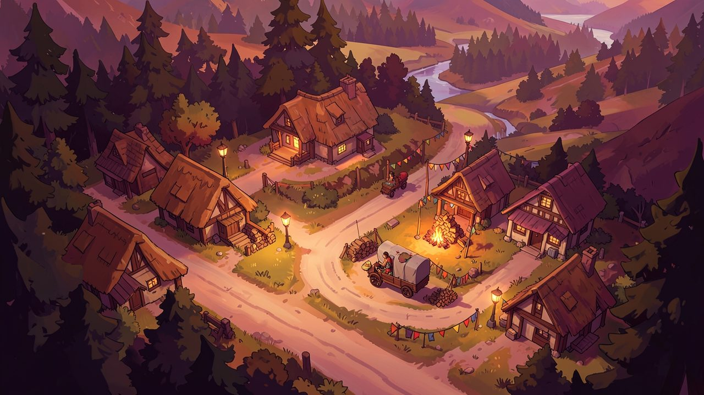
"Every village on the road has a festival coming, and every festival needs a fire."
Lore and story
The fire
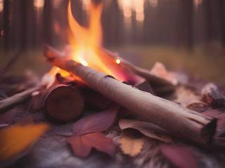
The circle carries an ember from a very old fire, and wherever they set it down, it grows into a bonfire that answers to cards. Above it hovers an orb that never runs empty: reach up and a card drops into your hand. Throw a card into the fire and the flame takes its color, its crackle and its mood.
Nobody in the circle knows where the ember came from. They know it likes company.
The friends
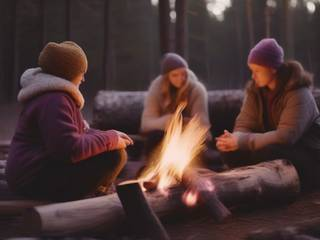
Two to six friends sit at the fire on any given night, and you choose which of them is you, the way you'd pick a fighter in a fighting game. Each one has their own face, their own habits at the table and their own way of reacting to a good card or a bad one.
The trip
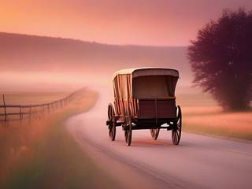
The friends travel the countryside from village to village. Every village has a festival coming, and every festival needs a fire, so they ask the circle to light it. The villagers bring blankets and sit in a wider ring around the players to watch the flame change, and to see what the night's show turns out to be.
Tonight
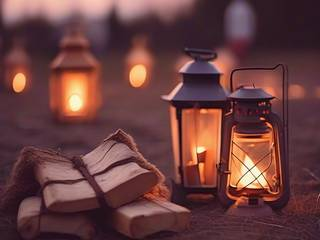
There's a valley ahead, a road through it with a few forks, a village at every bend, and a big midsummer fire waiting at the far end. Light them in whatever order the road lets you.
Controls and interface
You see the fire from your seat in the circle, your hand fanned out at the bottom of the screen and your friends around the fire with their faces and the size of their hands showing. Everything is done with the mouse; the keys are shortcuts.
Your hand
Click
Pick a card; click more of the same number to make a set
Drag
Reorder your hand, or the set you're about to play
Right click
Read what a card does
The fire
Click fire / Space
Throw the picked cards in
Click orb / D
Draw a card, up to three a turn
Enter
End your turn
Esc
Pause, rules and the map
A set is played in the order you picked it, so the last card you pick lands on top and decides what the next friend has to match. Hovering over a friend shows how many cards they hold, and the moment anyone is down to their last card, a warning appears above them on its own. Nobody has to shout anything.
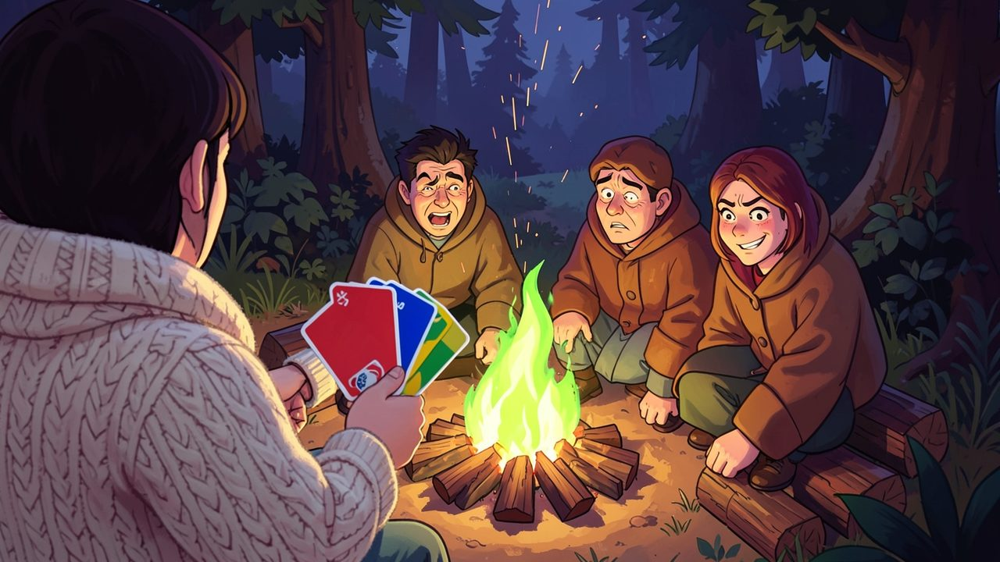
"Every card you play turns the flame its color. Three of the same element in a row, and the fire climbs with them."
Game layers
01 · Moment-to-moment
A turn at the fire
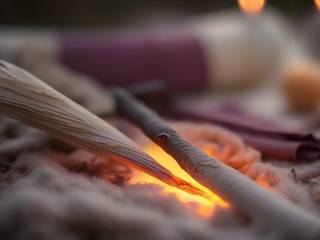
Look at the flame, look at your hand, and throw something in: one card, or a whole set of one number. The fire flares in the new color, the friends react, and the turn passes on. If nothing fits, reach up to the orb.
Most turns take seconds. The small decisions are the fun of it: which color to leave on top for the next friend, whether to send them for firewood now or keep that card for later, whether to go out or let the fire grow a little more.
02 · Low metagame
A trip across one valley
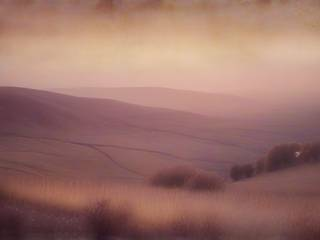
Each valley is a small map in the style of Super Mario Bros. 3: a road of five to nine villages with a few forks, ending at a midsummer fire where everyone the circle met along the way sits in. Every village is one festival night, and one match.
Each village sets up its own night: how many friends sit at the fire, how many elements are in the orb (four, six or eight), how many cards everyone starts with, and now and then a local custom that bends a rule. The road decides what comes next, and you decide which fork to take.
03 · High metagame
The land and its stories
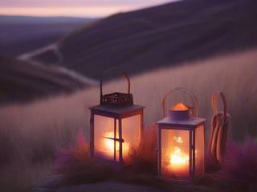
The valleys sit side by side on a map of the whole land, and there's always another one over the next hill. Every village you've lit keeps a lantern burning on that map, in the color its fire ended on, so the land slowly fills with little lights of every color.
The land map also offers the next trips, shaped by where you've been: a valley next to one you lit in blues might be a river country with water in every hand.
Every night's finale goes into the story book with the seed that made it, so any show can be watched again. Retold from the book, though, a night comes back the way campfire stories do: a little bigger every time, with taller flames and louder bangs than anyone actually saw.
04 · Practical game flow
One night, or a whole valley
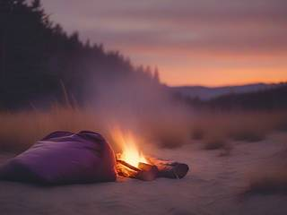
The game opens on the land map. Pick up the trip you're on, or choose the kind of night you want and the map offers a valley to match: a quick fire (small hands, ten minutes or so), a long night (big hands and a big show) or a wild night (the villages' customs rolled at random).
Stop after any match, or in the middle of one, and the trip waits where you left it. Whatever kind of night you chose, it counts toward the same land.
Game modes
Every night is either a free circle or a night in pairs. The village decides which, unless you've asked for one.
Mode
How it plays
What it's for
Free circle
Everyone plays for themselves, two to six at the fire
The classic game: a little mischief between friends
Pairs
Two or three teams of two, partners sitting across the fire; action cards only touch the other teams, and when one partner goes out, the pair is out together
Playing with a friend instead of against one, and feeding each other the colors you need
Features and mechanics
The heart of it
The pile is the fire
In ordinary shedding games the deck runs out and the discard pile is shuffled back in. Here the orb is endless and the pile is never recycled: every card thrown in stays in the fire, and the fire grows with it. The game only has to remember a count and the order the elements came in, so a fire of eight hundred cards is as light to run as a fire of eight.
When someone throws their last card, the match ends and the pile goes up in the finale: a light show generated from the match itself. Its length follows the size of the pile, and its colors, bursts and set pieces follow the elements in the order they were played, so a long match of blues and greens becomes a long, cool, rolling show, and a short fiery one a quick bright bang.
A fire can grow to 999 cards and no further. If it ever gets there, the match ends on its own, and the friend holding the fewest cards throws the last log.
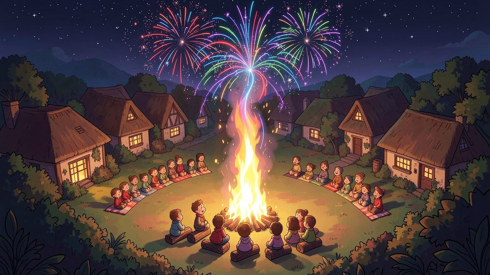
"When the last card is played, the whole pile goes up. The more cards in the fire, the longer the show."
Colors that mean something
Elements as firewood
The card colors are elements, after the energy types of the Pokémon card game, and each one burns its own way. A night uses four, six or all eight:
Element
The flame it makes
Water
Blue, low and rolling, with drifting mist
Fire
Red and roaring, the ordinary fire turned up
Plant
Green, with glowing vines curling out of the logs
Electric
Yellow, crackling, with little arcs jumping between the logs
Ground
Brown and heavy, embers like a glowing hearth (from six elements on)
Psychic
Purple, swirling slowly against the wind (six and up)
Metal
Silver-white and sharp, sparks like a forge (eight)
Aether
Teal and pink, shimmering (eight)
Ash
The wild card: pale grey, fits on anything, lets you pick the next element, and calms a climbing flame back down
Cards of the same element played one after another build up: two make the flame climb a little, three make it tall, four make it roar, and five or more is as high as it goes. When a different element lands on a built-up flame, the pair sets off a set piece: water on fire sends up a ring of smoke, electric on fire a plasma arc, fire on plant a firestorm of sparks, plant on ground an overgrowth of glowing vines. Set pieces are for watching, and they're written into the finale; they don't punish anyone.
The rules, eased
Sets, chains and the orb
Match the top card's element, its number or its symbol, or play an ash card. On top of that, three rules make the game smoother than the one it comes from:
Sets, as in rummy: play any number of cards with the same number (or the same action) in one turn, in the order you choose, so the one on top is the one you want the next friend to face.
The orb: if nothing fits, draw up to three cards, one at a time; play the first one that fits, or end your turn. You can also draw instead of playing, even with a playable card, if you'd rather keep it.
Chains: when someone sends you to fetch firewood or makes you nap, you can answer with the same kind of card and pass it on, with yours added. The chain grows around the circle until it reaches a friend who can't pass it on. Turning the circle around is not an attack, so it can't be chained.
You can go out by playing a whole set as your last move. There's no rule about announcing your last card; the warning does it for you.
Friendly mischief
The cards
Besides the numbers from zero to nine in every element, the orb gives out action cards, rarer the stronger they are. Every one of them is something a friend would do to another friend at a campfire:
Card
What it does
How often
Fetch wood +1 to +3
The next friend draws that many cards
Uncommon to rare
Nap
The next friend misses a turn
Uncommon
Turn around
Play goes the other way round the circle
Uncommon
Share
Hand one of your cards to the next friend
Uncommon
Show and tell
The next friend's hand stays face up until their next turn
Uncommon
Blanket
Wrap up: the fetch or nap aimed at you just stops
Rare
Duck
It sails past you to the friend after you
Rare
Toss it back
It goes back to whoever sent it
Rare
Swap seats
Trade your whole hand with the next friend's
Rare
Ash, Ash +4
Wild: choose the next element (the +4 also sends the next friend for four logs)
Legendary
Blanket, Duck and Toss it back are played on someone else's turn, the moment something is aimed at you, like the parries in Nanaca Crash.
Nobody gets knocked out
The last log, and dozing off
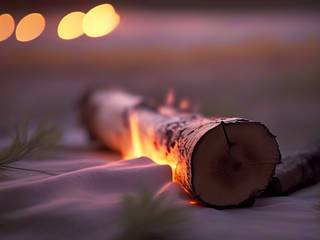
Going out ends the night, so the last card is worth thinking about. Play your last two cards as a set and you're out at once. Keep one back instead, and go out with it alone on a later turn, and it becomes the last log: its element crowns the finale and the show runs half again as long. That's a risk, because while you wait, the warning tells everyone you're on one card.
A friend who ends up holding twenty-five cards or more doesn't lose. They doze off, wrapped in a blanket by the fire, and sit out the rest of the match. They wake up for the next one, and the finale still wakes them for the show.
Company, not opponents
Faces at the fire
Every friend reacts to the night as it goes: idling and glancing around the circle, a little look when they lift a card from the orb (pleased, disgusted or excited, though some of them hide it better than others), a scowl when you send them for firewood, a smug look when they get you back, delight when they go out, and a soft snore when they doze off.
Those faces are what make the computer players feel like a circle of friends instead of a set of opponents. They're also a gentle part of the game: a friend who just lit up at the card they drew is probably holding something good.
Trivia
Bonfire began as one project, a singleplayer "Super UNO" with every card idea Reactorcore could find. Three different moods kept pulling it apart, so it became three games on one card engine: this cozy one, a fierce one (Ultimate Card) and a greedy one (Power Pile). Each takes the parts of the shared design that suit it best.
Reactorcore wanted a new name for the game from the start: "UNO" is a trademark, and "mau-mau", the older name for this kind of game, sounds to Reactorcore like a silly cat noise.
The game needs almost no artwork. The cards, the flames and the fireworks can all be drawn by code, with particles and screen effects, and a handful of sound effects reused cleverly.
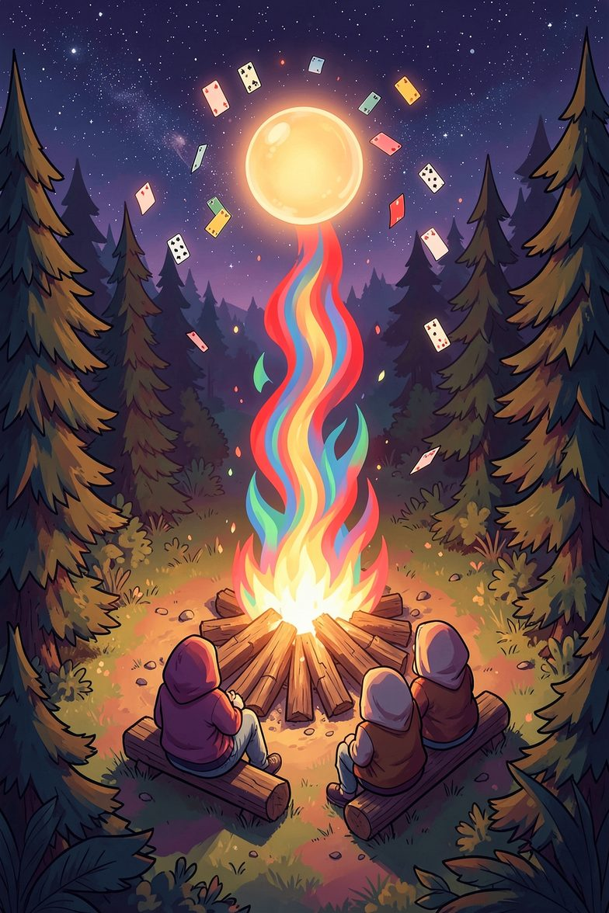
An invitation
Bonfire: Cozy Card Battles
Dear friend, the fire's going and there's a log with your name on it. Bring a blanket. We're on the road again tomorrow, and the next village has been asking about us.
Throw in a blue and watch it roll. Send someone for firewood and pretend you're sorry. Hold on to your last card a little longer than you should. Then stay for the show.